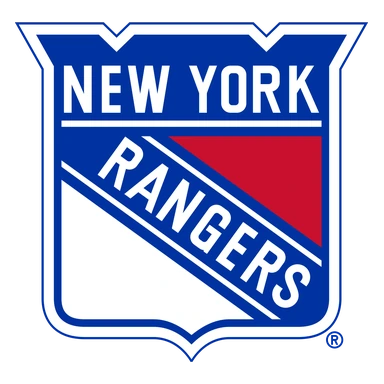
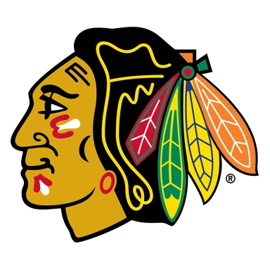

Сент-Луис — Флорида итог матча 15 ноября
Статистика матча
- 25Броски в створ28
- 1 из 3Голы в большинстве1 из 2
- 4Штрафные минуты6
- 53 %Выигранные вбрасывания47 %
- 15Силовые приёмы31
- 12Блокированные броски14
- 5Отборы5
- 14Потери19
Удаления по минутам 5
- 1-й период
- КомандаНарушение численного состава2 мин
- Cam FowlerИгра высоко поднятой клюшкой2 мин
- Aaron EkbladУдар клюшкой2 мин
- 2-й период
- Radko GudasЗадержка соперника2 мин
- 3-й период
- Bokondji ImamaИгра высоко поднятой клюшкой2 мин
Данные лиги.
- ТурнирНХЛ
Коротко о матче
Сент-Луис — Флорида 1:4: гости победили.
По форме команды были близки: в пяти последних матчах Сент-Луис — 2 победы, Флорида — 3 победы. Слабое место — оборона: Флорида — в среднем 3,2 пропущенной шайбы за игру в этих пяти матчах.
До этого команды встречались 30 января 2026 года: Сент-Луис — Флорида 5:4.
Форма: последние матчи
 Сент-Луис 2 победы из 5
Сент-Луис 2 победы из 5

П1:3 П4:5
П4:5 П1:3
П1:3 В3:2
В3:2- В1:0
 Флорида 3 победы из 5
Флорида 3 победы из 5

В5:3 П3:4
П3:4- П1:4
 В4:1
В4:1- В5:4
Личные встречи
- Сент-Луис5:4Флорида
- Флорида2:6Сент-Луис
- Сент-Луис2:3Флорида
- Флорида2:1ОТСент-Луис
Положение в таблице
| Команда | Место | И | В | П | Голы | Очки |
|---|---|---|---|---|---|---|
| 11 | 20 | 9 | 11 | 55:59 | 20 | |
| 8 | 22 | 12 | 10 | 70:63 | 27 |
Куда дальше
Все прогнозы дня — в TelegramПрогнозы на КХЛ, НХЛ и футбол, итоги каждое утро. Бесплатно.
Открыть каналМатериалы носят информационный характер и не гарантируют результат. Реклама букмекеров на сайте не размещается. Сайт только для совершеннолетних (18+).